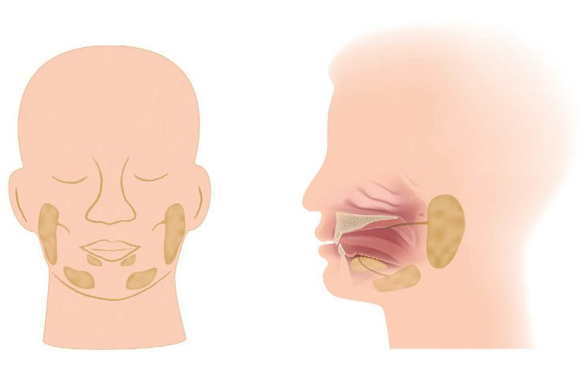
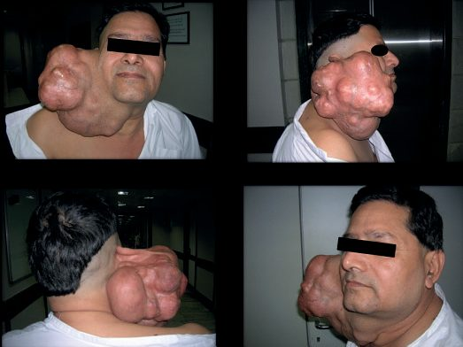
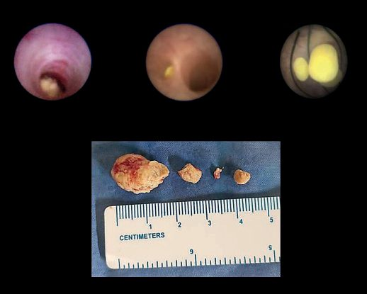

Salivary Gland Disease
Summary
- Salivary gland disease divides cleanly into obstruction, inflammation and neoplasia, and the three overlap: most patients with acute parotitis develop it as an acute episode of a chronic obstructive sialadenitis [1].
- Tumours are rare, 0.4% of all malignant tumours, with 80% arising in the parotid, and the clinical rule that matters is that pain, paraesthesia or facial palsy in a salivary swelling implies malignancy [1].
- The anatomical fact that governs all parotid surgery is that the facial nerve becomes enveloped within the gland as it grows, dividing it into superficial and deep lobes [2].
Definition
Sialadenitis is inflammation of a salivary gland; parotitis is inflammation of the parotid specifically [1]. A sialocele is a localised cavity or cyst containing saliva [2].
An accessory parotid gland is salivary tissue separated from the main gland, lying on the masseter in front of Stensen's duct with a secondary duct joining it; autopsy studies put the incidence at 21 to 61% [2].
Pathophysiology
Anatomy that determines the operations
The parotid duct (Stensen's) passes over the masseter and enters the buccal mucosa through buccinator at the level of the upper second molar tooth [2]. The Oxford Handbook describes the same course as an S-bend through buccinator, and notes the duct is palpable over the anterior border of masseter [1]. The submandibular duct is palpable in the floor of the mouth and enters on the sublingual papilla near the midline [1].
The facial nerve trunk lies between the deep and superficial parts of the parotid and divides into five branches (the pes anserinus) within the superficial portion [1]. The major functional component, about 80%, is superficial; the deep lobe is usually the retromandibular component with minimal functional tissue [2]. The retromandibular vein generally lies deep to the facial nerve and is a constant landmark, useful during retrograde identification of the main trunk [2].
Most parotid lymph nodes are embedded in the gland itself, because the lymphatic system develops within parotid tissue after the submandibular and sublingual glands have already encapsulated; most lie in the superficial preauricular lobe lateral to the masseter, few in the deep retromandibular lobe [2].
- The parotid's delayed encapsulation has surgical consequences.
- The parotid and minor salivary glands are ectodermal in origin while the submandibular and sublingual glands are endodermal; the parotid develops in the sixth week but encapsulates late, so the facial vessels, facial nerve and lymphatic tissue become embedded in the gland before the capsule fuses [2].
- After superficial parotidectomy the remnant unencapsulated acinar system may produce a sialocele, and exposure of the acinar system and its ductules to the wound can cause breakdown, salivary leakage and fistula formation [2].

Secretion and its interruption
The parotid is a pure serous gland responding to salivary stimuli such as food in the mouth or smell, with little resting flow; the submandibular gland is mixed serous and mucous, responds to the same stimuli, and has a resting flow that maintains mouth moisture along with the sublingual and minor glands [1]. Saliva lubricates, aids mastication and taste, suppresses oral bacteria and initiates starch digestion, and contains water, electrolytes (especially potassium and bicarbonate) and varying amounts of mucus and enzymes [1].
- The secretomotor pathway explains Frey's syndrome.
- Preganglionic parasympathetic fibres travel in the glossopharyngeal nerve from the inferior salivatory nucleus, via Jacobson's nerve to the tympanic plexus, then as the lesser petrosal nerve through the foramen ovale to synapse in the otic ganglion; postganglionic fibres join the auriculotemporal nerve in the infratemporal fossa to innervate the parotid [2].
- Within the gland acetylcholine stimulates acinar activity and ductal transport, causing vasodilatation and contraction of myoepithelial cells; atropine reduces salivation by competing with acetylcholine for the receptor [2]. Regeneration of parasympathetic fibres to the sweat glands produces abnormal autonomic reinnervation, and because acetylcholine serves as neurotransmitter for both postganglionic sympathetic and parasympathetic fibres, gustatory sweating results [2].
Clinical features
Obstruction produces mealtime syndrome: pain and swelling of the affected gland on eating and drinking [1]. Partial ductal obstruction causes swelling lasting minutes to several hours; complete obstruction leads to persistent swelling and infection, and the patient may describe colicky pain in the duct when eating [1].
Acute parotitis presents as an acutely painful preauricular swelling, usually with a history of recurrent intermittent swelling, a gland tender on palpation, and often a toxic patient with fever and a raised white cell count; pus may exude from the parotid duct opening opposite the crown of the second upper molar [1]. It occurs more commonly in adults [1].
Most tumours present as a slow-growing lump in the affected gland [1]. The features implying malignancy are pain, paraesthesia (for example of the lingual nerve with the submandibular gland) and facial palsy with the parotid [1]. Salivary tumours of the minor glands in the upper aerodigestive tract present as a lump, and 50% of these are malignant [1].
Examining the submandibular gland
- Three steps, in order [1].
- Examine the gland from behind, feeling the swelling by running a finger backwards under the jaw; if no lump is felt, ask the patient to suck a sour sweet and re-examine
- Examine the duct orifice from the front with the mouth wide open and the tongue pointed upwards, looking at the ducts near the midline at the root of the tongue for redness, pus or an impacted stone.
- Then examine bimanually from the front, one finger over the gland externally and the index of the other hand on the mucosal surface of the mandible, palpating the gland between the two.
Etiology
Salivary calculi are overwhelmingly submandibular: 80% occur within the submandibular ductal tree and 20% in the parotid [1]. They are composed of calcium phosphate and carbonate, may be related to sialadenitis, and are commonest in adults between the third and sixth decades [1].
Acute or chronic obstruction is now the commonest cause of parotitis [1]. The other causes are bacterial ascending parotitis, which is less common; viral infection such as paramyxovirus (mumps) and HIV; inflammatory disorders such as Sjögren's syndrome and sarcoidosis; and any cause of inflammation of lymph nodes within the parotid [1]. The patients at greatest risk are elderly, debilitated or dehydrated, with poor oral hygiene or on anticholinergic drugs [1].
Benign tumours
- Pleomorphic adenoma accounts for 80% of benign parotid tumours, with an equal sex ratio and peak incidence between 30 and 50 years [1].
- It is composed of epithelial and mesothelial cells forming a mucous matrix, often with chondromatous components [1]. It grows slowly and has no true capsule, so strands of tumour protrude into surrounding normal tissue, hence a recurrence rate of up to 50% [1].
- Malignant change to adenocarcinoma occurs in 20% after 10 years, and is seen in asymptomatic deep lobe parotid tumours [1].
Warthin's tumour (adenolymphoma) usually affects men over 50, is bilateral in 10%, has a strong association with smoking, is benign, presents as a slow-growing soft swelling, has very low malignant potential, and is successfully treated by wide local excision [1].

Malignant tumours
Mucoepidermoid tumour occurs typically between 30 and 50 years, is a low-grade malignancy with variable behaviour, and most grow slowly, invading locally and eventually metastasising to neck lymph nodes, lung and skin [1].
Adenoid cystic carcinoma is slow-growing, locally aggressive and indolent, with a propensity for perineural invasion (facial palsy is common, with extension through the stylomastoid foramen) and common lung metastasis [1]. It is often regarded as incurable, yet individuals can lead a normal life for 20 to 30 years before succumbing [1].
Acinic cell carcinoma is commoner in women, slow-growing and rare, but may metastasise unexpectedly; surgery is the treatment of choice [1].
Squamous cell carcinoma, adenocarcinoma and undifferentiated carcinoma are generally high grade, often with rapid local invasion into extraparotid tissues and the infratemporal fossa causing pain and trismus; there may be skin fixation or ulceration with facial nerve palsy and invasion of the external auditory canal, and these are incurable, managed with palliative radiotherapy [1].
Diagnosis
Radiolucency differs sharply between the two glands, which is why a negative plain film means different things at each site: 20% of submandibular calculi and 80% of parotid calculi are radiolucent [1].
- The plain films that help are a lower occlusal X-ray of the teeth, which shows a stone in the distal submandibular duct, and a lateral oblique film or orthopantomogram of the mandible, which shows a calculus in the gland [1].
- Submandibular sialography is technically difficult and rarely done; parotid sialography may show a filling defect, often shows sialectasis, and may itself be therapeutic by flushing debris out of the ductal tree [1].
- Ultrasound of the parotid and submandibular glands is often the investigation of choice for head and neck radiologists [1].
For tumours the imaging has a hierarchy. Clinical examination remains of great importance in assessing extent; CT may help differentiate stones, inflammation and tumour; MRI is the most sensitive investigation for local invasion and involvement of surrounding structures; and PET-CT is useful for assessing metastases [1].
In acute parotitis, plain films determine whether radio-opaque calculi are present; ultrasound or CT helps separate stone from inflammation from tumour; and if pus is present a bacteriology swab should be sent, the commonest infecting organism is Staphylococcus aureus [1].
Thresholds and severity
Enucleation is the wrong operation for a pleomorphic adenoma, because the tumour has no true capsule: enucleation is inadequate and often leads to local recurrence that is difficult to manage [1]. Recurrence of benign tumours may develop 20 years after surgery, especially where enucleation rather than superficial parotidectomy was performed [1].
The risk of facial nerve injury rises across three tiers, lowest in primary surgery for benign tumours, higher in redo surgery, highest in surgery for malignancy [1].
UK first-line treatment of acute parotitis is amoxicillin with rehydration and mouth care. Most patients respond to antibiotics: amoxicillin 500 mg three times daily, intravenously if necessary, with rehydration of dehydrated and debilitated patients and good oral nursing care using chlorhexidine mouth rinses [1].
One follow-up rule matters more than the antibiotic. Review patients by clinical examination after the infection has subsided, to make sure the obstruction was not due to a parotid tumour [1].
If a parotid abscess develops it is drained surgically, with an incision under general anaesthetic over the point where it appears to be pointing, made parallel to the branches of the facial nerve to avoid damaging them; the abscess is opened with sinus forceps and a Yeates drain placed in the wound [1].
Recurrent parotitis is managed conservatively first. Teach the patient to massage the gland to express saliva from the duct; dilate the duct with lacrimal probes to assist drainage; remove radio-opaque calculi where possible; and advise the patient to keep an emergency supply of antibiotics at home [1]. If recurrent parotitis persists for months or years, total parotidectomy is curative [1].
Treatment and Management
Calculi
Stones in the intra-oral part of the ducts are removed under local anaesthetic: steady the stone with Babcock's forceps, incise directly over it, remove it, and leave the duct marsupialised [1]. Stones within the submandibular gland require removal of the gland itself [1].
Removal of a calculus from the parotid gland is a rare operation; most parotid calculi sit at the distal end of the duct where it makes its S-bend through buccinator, and can be released by intra-oral incision of the parotid duct papilla [1]. Most parotid obstructive and inflammatory disease is treated conservatively with sialogogues and intermittent massage of the gland towards the duct, with duct dilatation using lacrimal probes, since most strictures occur at that same S-portion [1].

Tumours
Benign parotid tumours are treated by superficial parotidectomy, excision of the gland superficial to the facial nerve; deep lobe tumours require facial nerve-sparing total parotidectomy [1]. Benign tumours of other salivary glands are treated by excision of the entire gland, for example simple submandibulectomy [1].
Malignant tumours require radical local excision, with the question of sacrificing or preserving the facial nerve in parotid tumours described as controversial; this may be accompanied by neck dissection, especially for parotid tumours [1].
Procedural interventions
Retrograde identification of the facial nerve trunk uses the retromandibular vein, which lies deep to the nerve and is a constant landmark [2].
Where an accessory parotid gland harbours the pathology, the late completion of parotid encapsulation must be considered in planning, since surgery may also require removal of the superficial parotid gland [2].
Parotid abscess drainage is by an incision parallel to the facial nerve branches, opened with sinus forceps and drained with a Yeates drain [1].
Complications
Facial nerve injury after parotid surgery falls into two groups: 75% are neurapraxia with complete or extensive recovery of function, and 25% are neurolysis with little or no recovery, which may be treated by nerve interposition grafting [1].
Frey's syndrome is a late complication in up to 25% of patients: facial flushing and sweating of the skin innervated by the auriculotemporal nerve when the patient salivates [1]. It is caused by division of the parasympathetic secretomotor fibres to the parotid, which regenerate erratically to control cutaneous secretomotor function; subcutaneous botulinum toxin injection is useful [1].
Sialocele and salivary fistula follow from the unencapsulated acinar remnant and the exposed ductules after superficial parotidectomy [2].
Outcomes
The five-year survival rate for all salivary malignancies is around 60% [1].
Prognosis varies enormously by histology within that figure. Adenoid cystic carcinoma is often regarded as incurable yet compatible with 20 to 30 years of normal life; the high-grade squamous, adenocarcinoma and undifferentiated tumours are incurable and managed with palliative radiotherapy [1].
For benign disease the long time horizon is what catches people out: recurrence of a pleomorphic adenoma may appear 20 years after surgery, and malignant change occurs in 20% after 10 years [1].
References
- Oxford Handbook of Clinical Surgery, 5th ed., Ch. 5 Head and neck surgery
- Bailey & Love's Short Practice of Surgery, 28th ed., Ch. 54 Disorders of the salivary glands